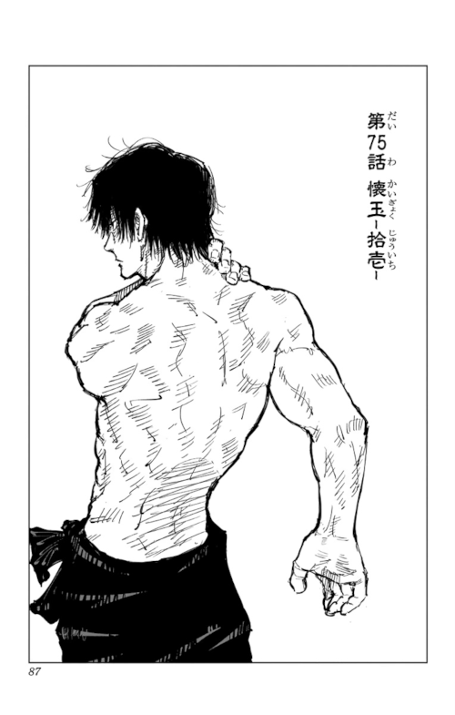

Toji Fushiguro é um personagem central e uma figura altamente influente na série de mangá e anime "Jujutsu Kaisen",
criada por Gege Akutami. Ele é um dos jujutsu sorcerers mais poderosos e carismáticos da série.
Abaixo, apresento uma biografia completa de Toji Fushiguro até a minha última atualização em setembro de 2021:
Nome Completo:
TOJI FUSHIGURO

Origens e Background:
Toji Fushiguro nasceu em uma família de jujutsu sorcerers, mas ele optou por se afastar dessa tradição e seguir seu próprio caminho.
Pouco se sabe sobre sua infância e formação,
mas ele se tornou um caçador de maldições independente e se especializou em eliminar maldições sem usar técnicas de feitiçaria.
Treinamento e Habilidades:
Toji Fushiguro é conhecido por sua abordagem não convencional para lidar com maldições e seu impressionante conjunto de habilidades,
que incluem: Mastery of Cursed Tools (Domínio de Ferramentas Amaldiçoadas): Toji é habilidoso no uso de armas e ferramentas amaldiçoadas,
incluindo uma katana especial que ele usa em batalha. Superior Physical Abilities (Habilidades Físicas Superiores): Ele possui força, velocidade e agilidade excepcionais,
tornando-se um oponente formidável mesmo sem o uso de técnicas de feitiçaria.
Papel na Série:
Toji Fushiguro desempenha o papel de um antagonista ambíguo na série, muitas vezes em conflito com os protagonistas.
Ele tem seus próprios objetivos e motivações, que nem sempre se alinham com os dos jujutsu sorcerers.
Confrontos Notáveis:
Fushiguro participa de vários confrontos notáveis ao longo da série, enfrentando tanto protagonistas quanto antagonistas.
Sua abordagem única e estilo de combate direto o tornam um adversário imprevisível.
Impacto e Legado:
Toji Fushiguro deixa uma impressão duradoura na série "Jujutsu Kaisen" devido à sua personalidade complexa e seu estilo de combate único.
Ele desempenha um papel significativo na exploração do mundo das maldições e na dinâmica entre jujutsu sorcerers e caçadores de maldições
independentes.
Vale ressaltar que a série "Jujutsu Kaisen" estava em andamento na época da minha última atualização em setembro de 2021,
e mais informações sobre o personagem e sua história podem ter sido reveladas desde então. Portanto, recomendo verificar fontes atualizadas
para obter informações mais recentes sobre Toji Fushiguro e seu papel na série.